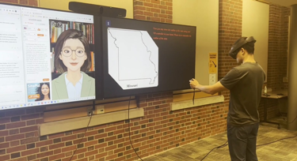
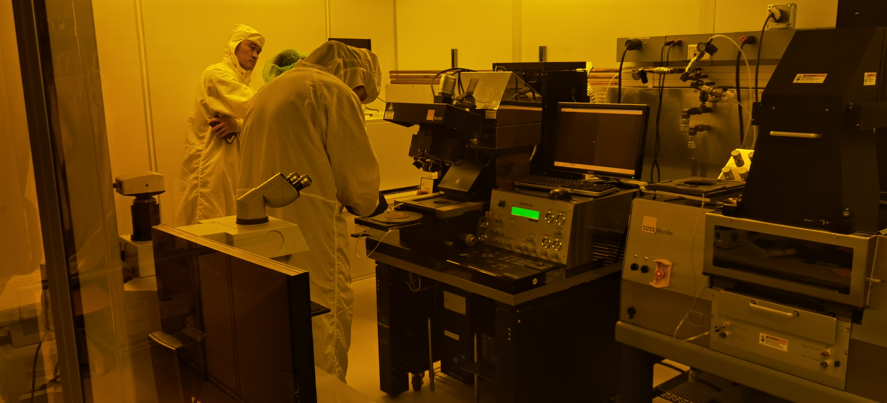
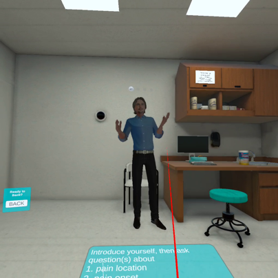

AI 与学习者的主动权
在提问、反思与练习之中，探索生成式 AI 如何提供支持，并为学习者保留有意义的选择。
学习技术研究者 · 教育工作者 · 设计者
我关注 VR 与 AI 介入 STEM 学习的方式：它们怎样帮助学习者解决眼前的问题，又怎样让解决问题的能力留在学习者自己手中。
现居美国密苏里州哥伦比亚市
密苏里大学博士候选人
AI 素养 · 扩展现实 · 以人为中心的学习设计
从一间科学课堂到更广阔的世界，有一个问题始终牵引着我：
怎样借助技术，让更多人乐于学习，也能自主掌握学习的方向？
01 · 研究
在提问、反思与练习之中，探索生成式 AI 如何提供支持，并为学习者保留有意义的选择。
以 VR、MR 与 AR 连接身体的行动和复杂的 STEM 概念，在沉浸式体验中设计、观察学习。
把共同设计、可用性研究与持续评价结合起来，回应学习者的差异，营造更具包容性的学习环境。
02 · 部分项目



03 · 部分论文
这些经过同行评议的工作，从沉浸式学习、AI 支持的模拟与学习者体验等角度，记录研究的进展。
2026
Bueno-Vesga, J. A., Xu, X., Gu, Y., He, H., Li, S., & Duan, Y.
IEEE Transactions on Visualization and Computer Graphics
2026
Duan, Y., Xu, X., He, H., Gu, Y., Li, S., & Bueno-Vesga, J.
IEEE AIxVR · 最佳论文提名
2026
He, H., Xu, X., Li, S., Bueno-Vesga, J. A., Duan, Y., & Gu, Y.
International Journal of Educational Technology in Higher Education
2025
Duan, Y., Xu, X., He, H., Li, S., & Gu, Y.
Journal of Interactive Learning Research, 36(1), 83–100
04 · 教学与教育管理
我的教学理念，落在三个彼此相连的词上： 倾听、学习、解放。 从倾听中理解学习者，循着证据改进教学，最终把独立思考的空间交还给他们。
研究助理 · 博士候选人
Academic Dean · 课程负责人 · 科学教师
学校管理者 · 科学教育主任 · 生物教师
首先，我也是一个学习者
博士学习之前，十六年有余的科学教学与学校管理，让我熟悉了课堂里的具体难题。这段经历持续提醒我：关于技术的研究，要能回应教师与学习者真实的处境。
课堂与研究之外，我也通过科普书翻译、科普写作和科学节目的设计与主持，让科学走近更广泛的读者与观众。
更多关于我的经历联系我